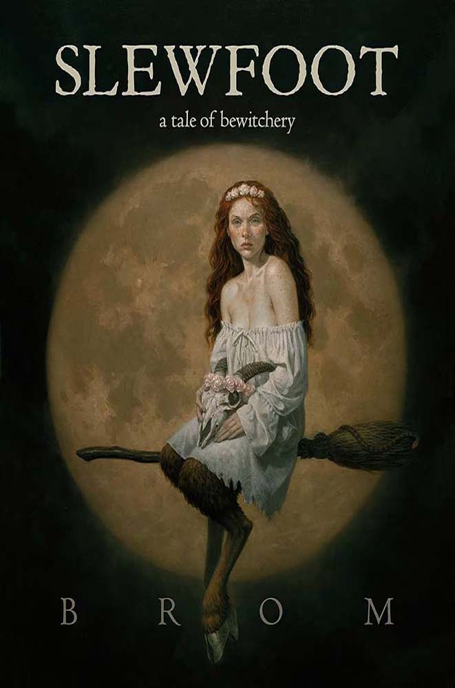
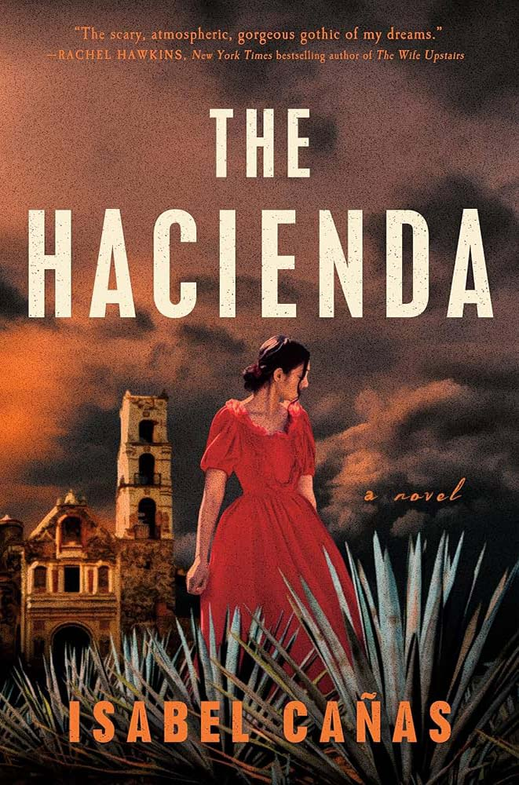
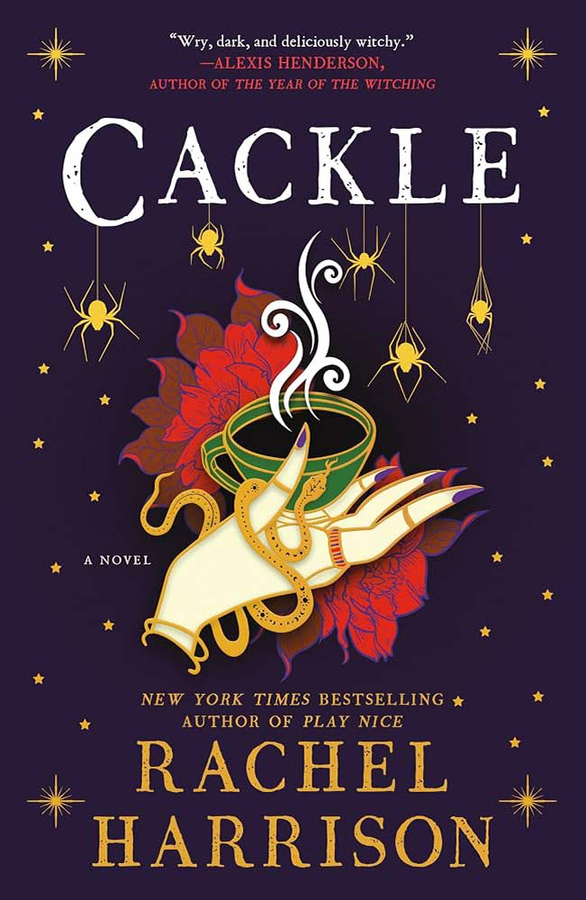

A dark, atmospheric tale of witchcraft, folklore, and female rage set in colonial New England. Eerie, unsettling, and perfect for a chilly fall night.

A gothic tale of haunted halls, dark secrets, and forbidden romance set in post-independence Mexico. Atmospheric, eerie, and perfect for a spooky fall read.

A haunting gothic horror filled with possession, family secrets, and forbidden romance. Dark, atmospheric, and steeped in Mexican folklore—perfect for a spooky fall read.

A dark, unsettling family horror about buried secrets, generational trauma, and something sinister lurking beneath the surface. Creepy, tense, and impossible to put down..
A deeply unsettling horror story told through a child’s eyes, as a strange presence begins creeping into her home and family life. Creepy, claustrophobic, and perfect for a spooky fall night.

A witchy, darkly charming story about friendship, independence, and a mysterious woman with secrets of her own. Cozy, eerie, and perfect for spooky season.

A bloody, darkly funny horror about a woman returning to her hometown after years away—only to find herself dealing with a very unexpected change. Sharp, messy, and wonderfully weird.

A disturbing dystopian horror that explores a world where human meat has become the norm. Bleak, unsettling, and brutally thought-provoking.

A haunting, claustrophobic horror about survival, fear, and the dark secrets hiding within a seemingly safe community. Disturbing, atmospheric, and deeply unsettling.

A dark modern fairy tale blending horror, folklore, and parenthood, as a new father is pulled into a terrifying supernatural world. Strange, haunting, and deeply atmospheric.
A dark, atmospheric tale of forbidden magic, religious oppression, and a young woman discovering the power within her. Haunting, witchy, and perfect for fall.

A brutal, atmospheric horror set against the landscape of the American frontier, where violence, vengeance, and something far more sinister collide. Dark, bloody, and deeply unsettling.